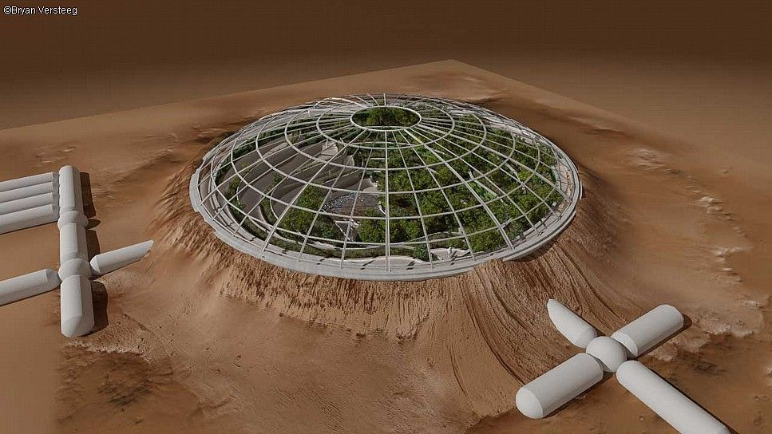

What is the mission?
The purpose of the project is to constitute an area with suitable conditions for people living on other planets, with sustainability in the most challenging conditions. With our Smart home, Greenhouse and Lake system in the Biosphere XYZ, our team tends to establish a system that can fulfill the needs and operate without human assistance. in terms of demonstrating applicability and sustainability of our project.
-

Why MARS?
Fundamental aim behind this argument is highlighting the resilience aspect of our design. We want the house designed to withstand the hardest conditions. Since a design that challenges the most difficult conditions can be adapted to any environment in the world.
-
Why MARS?
We believe that the source of the projects is the needs and that the creation of the needs is possible in the most difficult circumstances. We think that the problems that will arise when difficult conditions trigger the environment of need will lead us to more innovative and creative solutions.
-

Why MARS?
It is our first goal to adapt the phenomenon of difficult conditions that we choose to create artificially to our project. We want to be able to choose a planet like Mars that is quite different from Earth in terms of living conditions. From our point of view, Mars conditions are to be able to make sense of the project holistically and to be able to predict the problems that may occur and solve them in the simplest way with teamwork.
Developments Steps
By using the STEM method; The prototype, which is planned to be created at the end of the first year of Biosphere XYZ at Bilkent University, is crucial in terms of demonstrating applicability and sustainability of our project. The first year of the project is called the preparatory year, during which the whole team can adopt and work the working principles of the 7 subgroups shown in below. In the light of the studies, it is aimed to transition to the Target 1.2, which is planned to be transformed into a prototype of the aquarium, greenhouse and smart home system. It is one of our goals to connect the information between disciplines universally and to realize the STEM method.Contact Us
MES Biosphere XYZ Project Coordinator : İlke Doğan, Begüm Çevik
Email 1: begum.cevik@ug.bilkent.edu.tr
LinkedIn: Begüm Çevik
Mechanical Engineering Society(MES) Sponsorship Coordinator : İlke Doğan
MES Biosphere XYZ Project Coordinator : İlke Doğan, Begüm Çevik
Email 1: ilke.dogan@ug.bilkent.edu.tr
LinkedIn: İlke Doğan
About Us
>> Team: 15 people
>> Multidiscipliner Approach
>> Preparing Contests